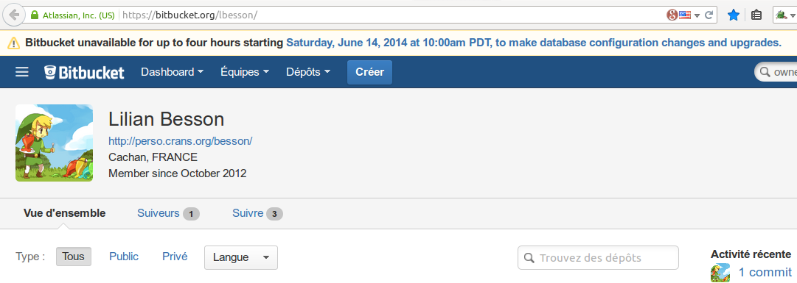
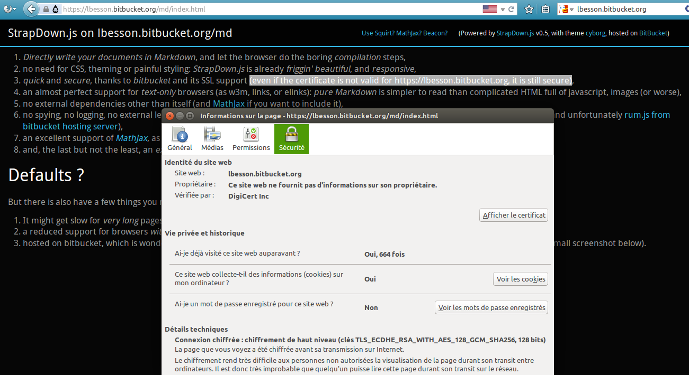
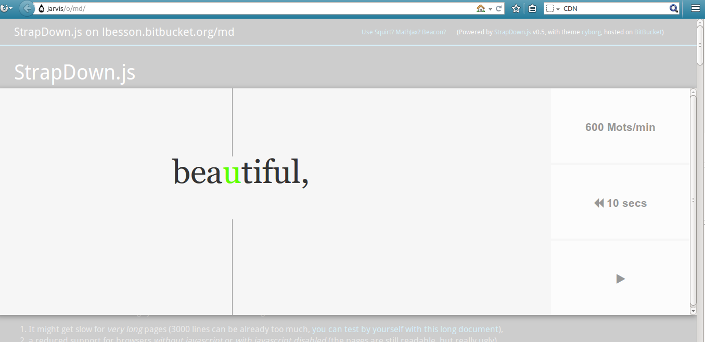

# StrapDown.js
**StrapDown.js** is an awesome **on-the-fly** [Markdown](https://en.wikipedia.org/wiki/Markdown)
to [HTML](https://en.wikipedia.org/wiki/HTML) [text processor](https://en.wikipedia.org/wiki/Compiler).
## Features
**StrapDown.js** is already pretty advanced, as you can see by yourself with this very page (powered by StrapDown.js of course).
1. *Directly write your documents in Markdown*, and let the browser do the boring *compilation* steps,
2. no need for CSS, theming or painful styling: *StrapDown.js* is already *friggin' beautiful*, and *responsive*,
3. *quick* and *secure*, thanks to *Bitbucket* and their SSL support (even if the certificate is not valid for [https://lbesson.bitbucket.org](https://lbesson.bitbucket.org), it is still secure),
4. comes with many examples: <a href="example1.html" title="Example 1">first</a>, <a href="example2.html" title="Example 2">second</a>, <a href="example3.html" title="Example 3">third</a>, <a href="example4.html" title="Example 4">4th</a>, <a href="example5.html" title="Example 5">5th</a>, <a href="example6.html" title="Example 6">6th</a>, <a href="example7.html" title="Example 7">7th</a>, <a href="example8.html" title="Example 8">8th</a>, <a href="example9.html" title="Example 9">9th</a>, <a href="example10.html" title="Example 10">10th</a>...
5. an almost perfect support for *text-only* browsers (as w3m, links, or elinks): *pure Markdown* is simpler to read than complicated HTML full of javascript, images (or worse),
6. no external dependencies other than itself (and [MathJax](http://www.mathjax.org/) if you want to include it),
7. no spying, no logging, no external leaking of your pages (and [Google Analytics with a 1px beacon image](http://perso.crans.org/besson/beacon.html) can be included with an option, and unfortunately [rum.js from Bitbucket hosting server](https://confluence.atlassian.com/display/BITBUCKET/Publishing+a+Website+on+Bitbucket#PublishingaWebsiteonBitbucket-TechnicalFeaturesandLimitationsofthisFeature)),
8. an excellent support of [*MathJax*](http://www.mathjax.org/), as shown in [this example](example3.html) or [that one](example5.html),
9. quite lightweight: [](https://github.com/Naereen/StrapDown.js/master/strapdown.min.js),
10. and, the last but not the least, an *experimental* embedding of the awesome [SquirtFR](//lbesson.bitbucket.io/squirt) bookmarklet to read *as quickly as Lucky Luke*,
11. Note : You can also use [https://cdn.rawgit.com/Naereen/StrapDown.js/master/strapdown.min.js](https://cdn.rawgit.com/Naereen/StrapDown.js/master/strapdown.min.js) to have a true HTTPS support, by loading the script from a quick and secure (HTTPS-aware) CDN.
## Drawbacks?
But there is also have a few things you need to know before using it:
1. It might get slow for *very long* pages, even if a **3000-line** document is handled very well and quickl ([you can test by yourself with this long document](3000.html)),
2. a reduced support for browsers *without javascript* or *with javascript disabled* (the pages are still readable, but really *ugly*),
3. hosted on [Bitbucket](https://bitbucket.org/), which is wonderful but *might* not be always available (~ [3 hours of maintenance every 6 months](http://status.bitbucket.org/history), as shown with a small screenshot below).
<a href="http://status.bitbucket.org/history"></a>
## Concretely
Concretely, Bitbucket is [always](http://status.bitbucket.org/) *up*, *secured* and *quick* (oooh, and Bitbucket is also awesome, completely free, and awesome too). Yeah, *Bitbucket is so awesome* that I had to say it *twice*, you read it correctly!
But if you prefer, feel free to download the project (with [StrapDown.js.zip](https://bitbucket.org/lbesson/lbesson.bitbucket.org/downloads/StrapDown.js.zip)) and upload it somewhere on your own server, or locally on your machine.
The script is also hosted on [GitHub](https://github.com/Naereen/StrapDown.js/) and so it can be loaded *quickly* and *securely* from [cdn.rawgit.com](https://cdn.rawgit.com/Naereen/StrapDown.js/master/strapdown.min.js): [https://cdn.rawgit.com/Naereen/StrapDown.js/master/strapdown.min.js](https://cdn.rawgit.com/Naereen/StrapDown.js/master/strapdown.min.js)!
> ### A quick "thank you" to the [initial project](https://github.com/arturadib/strapdown/)
> My version of StrapDown.js is a fork of [strapdownjs.com](http://strapdownjs.com), a cool project that [kinda seems dead by now](https://github.com/arturadib/strapdown/graphs/contributors).
---
## How to start using StrapDown.js ?
**Just follow this short tutorial** :
### 1) [Default template to use](example0.html) *(you can click this to see it)*
Create an empty file, save it to *mytext.html*
(yes, '*.html*' as HTML, but you will write in Markdown in no time),
and then copy and paste the following 5 lines :
```markdown
<!DOCTYPE html><html><head><title>A StrapDown.js template</title></head><body><textarea theme="cyborg">
### Write here in Markdown rather than in HTML
> This document is empty right now. Fill it out with awesome content !
</textarea><script type="text/javascript" src="//lbesson.bitbucket.io/md/strapdown.min.js"></script></body></html>
```
### 2) [A first example](example1.html) *(you can click this to see it)*
There we show how to use some basic markup.
```markdown
<!DOCTYPE html><html><head><meta charset="utf-8"/><title>« My first test with StrapDown.js »</title></head><body><textarea theme="cyborg">
# This is a Markdown document
You can now write your web page in Markdown.
You opened a `textarea` tag, but a `xmp` tag works as well.
And, yes, it is **as simple** as **one** HTML line at the beginning and **one** HTML line at the end of this document.
</textarea><script type="text/javascript" src="//lbesson.bitbucket.io/md/strapdown.min.js"></script></body></html>
```
---
<div class="alert alert-info">
<h2>List of examples:</h2>
<ul class="pagination pagination-lg">
<li class="disabled"><a href="#">All the examples:</a></li>
<li><a href="example1.html" title="Example 1">#1</a></li>
<li><a href="example2.html" title="Example 2">#2</a></li>
<li><a href="example3.html" title="Example 3">#3</a></li>
<li><a href="example4.html" title="Example 4">#4</a></li>
<li><a href="example5.html" title="Example 5">#5</a></li>
<li><a href="example6.html" title="Example 6">#6</a></li>
<li><a href="example7.html" title="Example 7">#7</a></li>
<li><a href="example8.html" title="Example 8">#8</a></li>
<li><a href="example9.html" title="Example 9">#9</a></li>
<li><a href="example10.html" title="Example 10">#10</a></li>
</ul>
</div>
---
### 3) [A second example](example2.html) *(you can click this to see it)*
There we embed two images, and describe a little more how cool is StrapDown.js !
We also use another theme (*united*).
```markdown
<!DOCTYPE html><html><head><title>Awesome second example with StrapDown.js</title></head><body><textarea theme="united">
# This is a Markdown document
You can now write your web page in Markdown.
You opened a `textarea` tag, but a `xmp` tag works as well.
And, yes, it is **as simple** as **one** HTML line at the beginning and **one** HTML line at the end of this document.
## What to say more
Feel free to use it, redistribute it etc, *under the condition of the GPLv3 License*.
## Only for textual, simple documents
StrapDown.js is *awesome* to quickly build nice-looking web pages,
but it might not be efficient for anything more complicated, as it is really not designed for it.
## Add a picture ?
With Markdown syntax, it's easy : .
### An other one ?
Alright, here comes the mighty Cthulhu 
### A last one, because it's dangerous to go alone :

## Add anything you want, it *might* work
For instance, you can add use Google Analytics to monitor the page's activity,
with including a piece of Javascript code, before *or* after closing the *textarea* tag.
<script type="text/javascript">
(function(i,s,o,g,r,a,m){i['GoogleAnalyticsObject']=r;i[r]=i[r]||function(){
(i[r].q=i[r].q||[]).push(arguments)},i[r].l=1*new Date();a=s.createElement(o),
m=s.getElementsByTagName(o)[0];a.async=1;a.src=g;m.parentNode.insertBefore(a,m)
})(window,document,'script','//www.google-analytics.com/analytics.js','ga');
ga('create','UA-38514290-14','lbesson.bitbucket.org'); ga('send','pageview');
</script>
<noscript>
The previous paragraph was supposed to include Google Analytics web monitoring tool,
but hey, you are browsing without JavaScript enabled, what can I do for it ? <br/>
Maybe you are using a text-only browser (w3m, links, elinks ? I love elinks !),
or a 19th-century IE, or maybe you disabled JavaScript globally (which is kinda stupid) or site-by-site (with NoScript, as I do, which is brilliant, and safer).
</noscript>
## That's it
This was a brief overview, to show the basic use of [StrapDown.js](index.html).
</textarea><script type="text/javascript" src="//lbesson.bitbucket.io/md/strapdown.min.js"></script></body></html>
```
### 4) More examples, with [MathJax](http://www.mathjax.org/) enabled
StrapDown.js comes with an *easy* and *excellent* support of the incredible [MathJax](http://www.mathjax.org/),
as shown in these three examples: [example n°3](example3.html) and [example n°4](example4.html), and [the last one](example5.html) which shows a new and quicker way to include [MathJax](http://www.mathjax.org/) (from StrapDown *v0.5*).
### 5) An example about tables
[This example n°6](example6.html) shows several examples of tables, written in Markdown and rendered as pretty (HTML+CSS !) tables in your browser. (*new!*)
---
<div class="alert alert-info">
<h2>List of examples:</h2>
<ul class="pagination pagination-lg">
<li class="disabled"><a href="#">All the examples:</a></li>
<li><a href="example1.html" title="Example 1">#1</a></li>
<li><a href="example2.html" title="Example 2">#2</a></li>
<li><a href="example3.html" title="Example 3">#3</a></li>
<li><a href="example4.html" title="Example 4">#4</a></li>
<li><a href="example5.html" title="Example 5">#5</a></li>
<li><a href="example6.html" title="Example 6">#6</a></li>
<li><a href="example7.html" title="Example 7">#7</a></li>
<li><a href="example8.html" title="Example 8">#8</a></li>
<li><a href="example9.html" title="Example 9">#9</a></li>
<li><a href="example10.html" title="Example 10">#10</a></li>
</ul>
</div>
---
# Themes
There is now **18 different themes**, coming from [http://bootswatch.com/united](http://bootswatch.com/) and from the original project ([strapdownjs.com](http://strapdownjs.com "Original project's website")) :
- cyborg, as used by the [first two examples](example1.html) (and a [demo on bootswatch.com/cyborg](http://bootswatch.com/cyborg)),
- and united (as used [one this very page that you are reading](//lbesson.bitbucket.io/md/index.html)!), inspired from [ubuntu](https://www.ubuntu.com/) (and a [demo on bootswatch.com/united](http://bootswatch.com/united)).
I recently added some new themes, and now there is [these 9 new themes](https://bitbucket.org/lbesson/lbesson.bitbucket.org/src/master/md/themes/).
---
# Cloning the StrapDown.js project?
```
git clone https://github.com/Naereen/StrapDown.js
```
### [A zip archive of the project](https://bitbucket.org/lbesson/lbesson.bitbucket.org/downloads/StrapDown.js.zip)
You can also easily download this *up-to-date* version of the *md* subdir of my [lbesson.bitbucket.org](https://bitbucket.org/lbesson/lbesson.bitbucket.org/src/master/md/) repository:
[StrapDown.js.zip](https://bitbucket.org/lbesson/lbesson.bitbucket.org/downloads/StrapDown.js.zip)
(and [its PGP signature](https://bitbucket.org/lbesson/lbesson.bitbucket.org/downloads/StrapDown.js.zip.asc)).
---
# Printing to a nice looking PDF?
Rather than use the built-in *"Print to a PDF"* function of your browser, you should consider using [StrapDown2PDF](strapdown2pdf.html).
It has a perfect support for Markdown markup.
**Warning:** but the [LaTeX](https://en.wikipedia.org/wiki/LaTeX) / [MathJax](http://www.mathjax.org/) support is still limited.
### Some examples of a good PDF printed version of a StrapDown.js powered page
- [This (English) translation of a French press article](http://perso.crans.org/besson/publis/10_10_2014__Liberation.en.html) about [Mahindra École Centrale](http://www.mahindraecolecentrale.edu.in/), nicely printed to [this PDF](http://perso.crans.org/besson/publis/10_10_2014__Liberation.en.pdf),
- [This (English) translation of another French press article](http://perso.crans.org/besson/publis/29_10_2014__LeMonde.en.html) about the future [École Centrale Casablanca](http://www.centrale-casablanca.ma/site/home.html), nicely printed to [a PDF, quickly modified by hand to include an image](http://perso.crans.org/besson/publis/29_10_2014__LeMonde.en.pdf),
- [This small (French) research report](http://perso.crans.org/besson/publis/PDE_09_2014/index.html) on a [non-linear Partial Differential Equation](https://en.wikipedia.org/wiki/Partial_differential_equations), nicely printed to [a PDF, with very good support of LaTeX](http://perso.crans.org/besson/publis/PDE_09_2014/index.pdf) ([since this modification](https://bitbucket.org/lbesson/bin/diff/strapdown2pdf?diff2=20fd4babc524&at=master)),
- [This (French) homepage of a programming project](http://perso.crans.org/besson/agreg/m/2/) on [Euler theorems on Eulerian path](https://en.wikipedia.org/wiki/Eulerian_path#Properties). I did this as an assignment for [my M.Sc. of Computer Science in 2014](http://perso.crans.org/besson/cv.en.pdf), and it was also a good training for one oral exam of the [French national competitive examination to become a prep' school professor](https://en.wikipedia.org/wiki/Agr%C3%A9gation) in Mathematics and Computer Science (for [which I have been ranked 23rd among 795](http://web.archive.org/web/20140709144720/agreg.org/ResultatsMerite2014.html) in 2014!).
> You might also be interested by a way to make a StrapDown.js-powered document autonomous, ie. not using the script anymore.
> For this purpose, [I also wrote strapdown2html.py](https://bitbucket.org/lbesson/bin/history-node/master/strapdown2html.py) a Python program [designed to do this (called, no surprise, strapdown2html.py)](https://bitbucket.org/lbesson/bin/str/master/strapdown2html.py).
---
# Future features or ideas?
- Improve the SSL certificate? As that screenshot shows, [SSL is available](https://lbesson.bitbucket.io/md/), but the certificate is not valid (it has been signed only for [bitbucket.org](https://bitbucket.org) and [www.bitbucket.org](https://www.bitbucket.org)):
<a href="detail_SSL_certificate__24_11_2014.png" ></a>
- Maybe host it on a [CDN](https://en.wikipedia.org/wiki/Content_delivery_network)?
- Hack something to force using *local cached* version of the script and stylesheets rather than downloading them every time?
- More "quick access" buttons on the top-navbar? (there is already a button to [use Squirt](//lbesson.bitbucket.io/squirt) ([as shown in the example below](./SquirtFR_on_a_StrapDownJS_page.png)), one to [activate MathJax](http://www.mathjax.org), and one to [test a Google Analytics Beacon image](http://perso.crans.org/besson/beacon.en.html).)
<a href="SquirtFR_on_a_StrapDownJS_page.png" ></a>
- … and any new idea is most surely welcome!
### Some people are using it or talking about it!
- [This question asked on Github on the 1st of May of 2014](https://github.com/arturadib/strapdown/issues/36) by [hardly](https://github.com/hardly) about the [old strapdown repository](https://github.com/arturadib/strapdown). To answer that question: the main difference is than I am still interested and eager to work on [my StrapDown.js](//lbesson.bitbucket.io/md/), but it seems to not be the case of [the previous developper](https://github.com/arturadib/).
- [These guys at Quantego](http://quantego.com/) are using my StrapDown.js for [that small and interesting page](https://slides.quantego.com/).
- I got an email (*January 2015*) from one fellow working for [www.nexirius.com](http://www.nexirius.com/), and so I created the demos on tables to answer him: [example #6](example6.html) and [example #7](example7.html).
- In *March 2016*, someone asked my to add more options, like ``nonavbarfixed=y`` and ``keepicon=y``, and add more themes, which I did, of course.
> If you are using (or have used) my StrapDown.js, you can send an email, or [contact me if you want](http://perso.crans.org/besson/callme.en.html), I would love to hear any feedback from you!
---
# About
### Forged by [Lilian Besson](http://perso.crans.org/besson/) ([lbesson on bitbucket](https://bitbucket.org/lbesson)).
© 2013-2016
### Languages
- [Markdown](https://en.wikipedia.org/wiki/Markdown);
- [JavaScript](https://en.wikipedia.org/wiki/Javascript);
- [CSS 3](https://en.wikipedia.org/wiki/Cascading_Style_Sheets).
### License
This project is released under the **GPLv3 license**, for more details,
take a look at the [LICENSE](http://perso.crans.org/besson/LICENSE.html) file in the source.
*Basically, that allow you to use all or part of the project for you own business.*